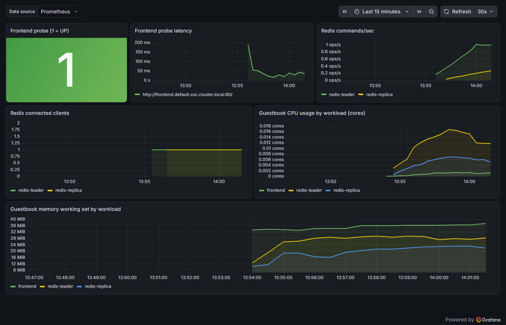
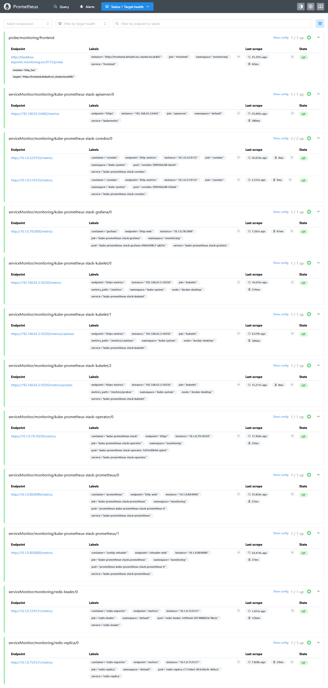

Guestbook on Kubernetes, with Prometheus and Grafana monitoring (Pulumi, TypeScript)
The Kubernetes Guestbook (a Redis leader, a Redis replica and three PHP frontends), extended with a
monitoring stack. Everything is deployed by one Pulumi program: one pulumi up builds the app,
Prometheus, Grafana and a Guestbook dashboard, and outputs Grafana's URL and admin credentials.
Derived from the kubernetes-ts-guestbook (simple variant) example in
pulumi/examples, licensed under Apache-2.0 (see LICENSE and
NOTICE). The Guestbook application originates from the
Kubernetes tutorial.

What gets deployed
| Namespace | Component | Details |
|---|---|---|
default |
frontend x3 |
pulumi/guestbook-php-redis (Apache/PHP), Service on port 80 (LoadBalancer by default) |
default |
redis-leader |
redis:7 + redis_exporter v1.96.0 sidecar on port 9121, named metrics |
default |
redis-replica |
pulumi/guestbook-redis-replica + redis_exporter sidecar on port 9121, named metrics |
monitoring |
kube-prometheus-stack 92.16.1 (Helm) | Prometheus (+ operator) and Grafana (NodePort 32000) |
monitoring |
prometheus-blackbox-exporter 11.20.2 (Helm) | probes the frontend over HTTP (port 9115) |
monitoring |
2 ServiceMonitors, 1 Probe | scrape config for the Redis exporters and the frontend probe |
monitoring |
ConfigMap guestbook-dashboard |
the Grafana dashboard, picked up by Grafana's dashboard sidecar |
Files: index.ts (the app and outputs), monitoring.ts (the monitoring stack), dashboard.ts (the
dashboard), Pulumi.yaml (config schema). This README is also available as README.html (same
content, for reading in a browser).
Prerequisites
Tested on Windows 11 with PowerShell, Docker Desktop (WSL 2) and its built-in Kubernetes v1.36.
Node.js 24, Git, kubectl, and the Pulumi CLI (
winget install --id Pulumi.Pulumi -e). The Helm CLI is not needed: Pulumi renders the charts.Docker Desktop → Settings → Kubernetes → Enable Kubernetes, cluster type kubeadm (in the kind mode NodePorts do not reach
localhost).Enough memory for the VM. On an 8 GB PC, set it in
%USERPROFILE%\.wslconfig, then quit Docker Desktop, runwsl --shutdownand start it again:[wsl2] memory=4GB swap=4GB [experimental] autoMemoryReclaim=gradual
Deploy
Start Docker Desktop first and wait until its status bar shows Kubernetes running (green); then
kubectl get nodes should list docker-desktop Ready.
The repository deliberately ships no Pulumi.dev.yaml: that file holds a stack's config and an
encryption salt tied to its creator's passphrase, so a copied one makes pulumi stack init fail with
incorrect passphrase. The pulumi config set lines below create your own.
kubectl config use-context docker-desktop
npm install
# Pulumi state stays on this machine (no Pulumi Cloud account needed).
# Secrets in the stack are encrypted with this passphrase: set it in every new PowerShell window.
$env:PULUMI_CONFIG_PASSPHRASE = "choose-a-passphrase"
pulumi login --local
pulumi stack init dev
pulumi config set serviceType LoadBalancer # frontend: LoadBalancer (default) or NodePort
pulumi config set grafanaServiceType NodePort # Grafana: NodePort (default) or LoadBalancer
pulumi config set grafanaNodePort 32000
npx tsc --noEmit # compile check
pulumi up --yes # about 3 minutes on a laptop once images are cached
pulumi up --refresh --yes # reads the LoadBalancer address into frontendUrl
| Config key | Default | Meaning |
|---|---|---|
serviceType |
LoadBalancer |
Frontend Service type (LoadBalancer or NodePort) |
frontendNodePort |
30080 |
Frontend NodePort when serviceType is NodePort |
grafanaServiceType |
NodePort |
Grafana Service type (NodePort or LoadBalancer) |
grafanaNodePort |
32000 |
Grafana NodePort |
grafanaHost |
localhost |
Host used to build the grafanaUrl output |
The Guestbook is then at pulumi stack output frontendUrl (http://localhost).
Grafana access
The source of truth is the stack output: every fresh deployment generates a new admin password.
pulumi stack output grafanaUrl # http://localhost:32000
pulumi stack output grafanaAdminUser # admin
pulumi stack output grafanaAdminPassword --show-secrets # generated password
Log in at http://localhost:32000 as admin with that password. No password is written in this
repository: each deployment generates its own, and only the stack output knows it. The dashboard is
at http://localhost:32000/d/guestbook (Dashboards → Guestbook, in the General folder).
Verified path: NodePort 32000 on Docker Desktop (kubeadm). Grafana is a NodePort by default
because the frontend's LoadBalancer already owns localhost:80, and a fixed NodePort gives a
deterministic URL. If it does not open: kubectl -n monitoring port-forward svc/kube-prometheus-stack-grafana 3000:3000
and browse http://localhost:3000.
The password is created by Pulumi (random.RandomPassword), stored in a Kubernetes Secret and given
to Grafana through grafana.admin.existingSecret, so it never appears in the Helm release values.
Verify that Prometheus scrapes the Guestbook
How each tier is monitored: the backend is scraped: a redis_exporter sidecar in each Redis
pod publishes /metrics, and two ServiceMonitors point Prometheus at it. The frontend is probed,
not scraped: its Apache/PHP image exposes no metrics endpoint, so blackbox-exporter requests the
page every 30 s and records availability and latency. CPU and memory for every Guestbook pod come
from the kubelet's cAdvisor endpoint.
kubectl -n monitoring port-forward svc/kube-prometheus-stack-prometheus 9090:9090
Open http://localhost:9090/targets. Expected (the acceptance test):
| Target | State | Proves |
|---|---|---|
serviceMonitor/monitoring/redis-leader/0 |
UP | backend scraped |
serviceMonitor/monitoring/redis-replica/0 |
UP | backend scraped |
probe/monitoring/frontend |
UP | frontend probed |
serviceMonitor/monitoring/kube-prometheus-stack-kubelet/1 (/metrics/cadvisor) |
UP | pod CPU/memory |

Query checks (PowerShell, with the port-forward running):
function Get-PromQL($q) {
(Invoke-RestMethod -Method Post -Uri http://localhost:9090/api/v1/query -Body @{ query = $q }).data.result |
ForEach-Object { "{0} = {1}" -f ($_.metric | ConvertTo-Json -Compress), $_.value[1] }
}
Get-PromQL 'up{job=~"redis-.*"}' # 2 series, both 1
Get-PromQL 'redis_up' # 2 series, both 1
Get-PromQL 'probe_success{job="frontend"}' # 1
Get-PromQL 'probe_http_status_code{job="frontend"}' # 200
End-to-end proof (traffic in, metrics out):
$frontendUrl = pulumi stack output frontendUrl
1..50 | ForEach-Object { Invoke-WebRequest $frontendUrl -UseBasicParsing | Out-Null }
Get-PromQL 'sum(rate(redis_commands_processed_total[2m]))' # > 0, rises with the traffic
In the reference run, 50 requests moved redis_commands_processed_total from 202 to 238.
The dashboard
Grafana → Dashboards → Guestbook (provisioned from dashboard.ts, in the General folder).
| Panel | Query | Healthy |
|---|---|---|
| Frontend probe (1 = UP) | probe_success{job="frontend"} |
green 1 (a down frontend shows red 0; No data means the probe target is missing) |
| Frontend probe latency | probe_duration_seconds{job="frontend"} |
tens of ms |
| Redis commands/sec | sum by (job) (rate(redis_commands_processed_total[5m])) |
rises with traffic |
| Redis connected clients | sum by (job) (redis_connected_clients) |
1 per instance between requests (PHP connects per request) |
| CPU by workload | pod-level container_cpu_usage_seconds_total, grouped by workload |
small, steady |
| Memory by workload | pod-level container_memory_working_set_bytes, grouped by workload |
about 20-40 MiB each |
Design decisions
- Frontend probed, not scraped. The image has no
/metricsand nomod_status; adding them means rebuilding the image. A blackbox Probe gives honest availability and latency without that. - redis_exporter as sidecars rather than a separate Deployment: it reads Redis over
localhostin the same pod. It has a liveness probe, deliberately not a readiness probe: a failing readiness probe would mark the Redis pod NotReady and pull Redis out of its Service, letting a monitoring sidecar break the app. - Explicit labels, namespaces and named ports. In the stock example the Services' labels resolve
to
undefinedand nothing sets a namespace, so a ServiceMonitor would silently match nothing. Every app resource now hasnamespace: default, anapplabel and named ports (metrics,redis,http); the ServiceMonitors select them across namespaces withnamespaceSelector. - Selector flags.
serviceMonitorSelectorNilUsesHelmValuesandprobeSelectorNilUsesHelmValuesarefalse, so Prometheus discovers our ServiceMonitors and Probe without the chart'sreleaselabel. Left at the default, a miss is silent. - Sized for an 8 GB laptop. Alertmanager, node-exporter and kube-state-metrics are disabled:
none is required here, pod CPU/memory comes from the kubelet's cAdvisor endpoint, and
node-exporter crash-loops on Docker Desktop ("path / is mounted on / but it is not a shared or
slave mount"). The chart's default
node_*/kube_*recording rules therefore evaluate empty, which is harmless because no alerts are configured. Control-plane scrapers that Docker Desktop does not expose are off. Limits: Prometheus 768Mi, Grafana 512Mi; no persistent volumes. - Pod-level resource queries. Docker Desktop's container runtime exposes only pod-level cAdvisor
series (no
containerlabel), so the CPU/memory panels use pod-level series (container=""), which exist on every runtime, grouped into aworkloadlabel derived from the pod name. Per-pod figures include the exporter sidecar. isMinikubereplaced byserviceType(frontend) andgrafanaServiceType(Grafana).- Pinned versions: both charts, redis_exporter,
redis:7and the npm packages. The twopulumi/guestbook-*images publish no version tags, so they cannot be pinned.
Starting it again (after a reboot or quitting Docker)
The deployment lives inside Docker Desktop's Kubernetes, so it comes back on its own when Docker starts. Nothing needs redeploying.
# 1. Start Docker Desktop, wait for "Kubernetes running", then:
kubectl get nodes # docker-desktop Ready
kubectl get pods -n default # 3 frontend 1/1, redis-leader 2/2, redis-replica 2/2
kubectl get pods -n monitoring # all Running (Grafana 3/3, Prometheus 2/2)
# 2. Only if the pods are missing (e.g. Kubernetes was reset), in this folder:
$env:PULUMI_CONFIG_PASSPHRASE = "your-passphrase"
pulumi up --yes
Then browse http://localhost (Guestbook) and http://localhost:32000 (Grafana). Pods can take a
minute or two to turn Running after Kubernetes reports Ready.
Troubleshooting
These were all hit while testing this README from scratch (fresh copy of the repository, empty cluster, new passphrase) on Nov 3, 2026.
| Symptom | Cause | Fix |
|---|---|---|
pulumi stack init dev fails: could not create secrets manager for new stack: incorrect passphrase |
A Pulumi.dev.yaml from another person's stack is in the folder; its encryption salt belongs to their passphrase |
Delete Pulumi.dev.yaml (it is not shipped in this repository) and run pulumi stack init dev again |
pulumi stack init dev fails: stack already exists |
You already have a local stack called dev in ~/.pulumi |
Use another name (pulumi stack init guestbook-test) or pulumi stack select dev |
Docker Desktop closes itself a few seconds after starting (backend log ends with shutting down vital services) |
Stale socket files left in %LOCALAPPDATA%\Docker\run and %LOCALAPPDATA%\docker-secrets-engine (seen on a PC with McAfee; docker desktop stop does not remove them) |
Quit Docker, then rename both folders aside and start Docker again (commands below). An antivirus exclusion for those folders is the permanent fix |
kubectl exec fails: server gave HTTP response to HTTPS client |
Docker Desktop's cri-dockerd runtime | Not needed by this README; use the port-forward or the Grafana UI instead |
| Grafana panels show No data right after deploying | Prometheus has not scraped yet | Wait a minute and set the time range to Last 15 minutes |
# Docker Desktop startup fix (stale sockets): quit Docker Desktop first.
$ts = Get-Date -f yyyyMMddHHmm
Rename-Item "$env:LOCALAPPDATA\Docker\run" "run.old-$ts" -ErrorAction SilentlyContinue
Rename-Item "$env:LOCALAPPDATA\docker-secrets-engine" "docker-secrets-engine.old-$ts" -ErrorAction SilentlyContinue
Start-Process "C:\Program Files\Docker\Docker\Docker Desktop.exe"
Teardown
pulumi destroy --yes
pulumi stack rm dev
Helm never deletes a chart's CRDs. To remove the leftover Prometheus operator CRDs:
kubectl get crd -o name | Select-String 'monitoring.coreos.com' | ForEach-Object { kubectl delete $_.ToString().Trim() }
Other clusters
- kind (not Docker Desktop): NodePorts and LoadBalancers do not reach
localhost, so usekubectl port-forward svc/frontend 8080:80andkubectl -n monitoring port-forward svc/kube-prometheus-stack-grafana 3000:3000. - Cloud clusters:
pulumi config set grafanaServiceType LoadBalancer; runpulumi up --refreshonce more after the first deploy sografanaUrlpicks up the load balancer address.
Limitations and next steps
No alerting rules are defined; Prometheus is a single replica; metrics are lost when its pod restarts (no persistent volume); Prometheus itself has no authentication. Natural next steps: SLO-based alerts on probe success and Redis availability, persistent storage, and an Apache exporter if the frontend image can be rebuilt.